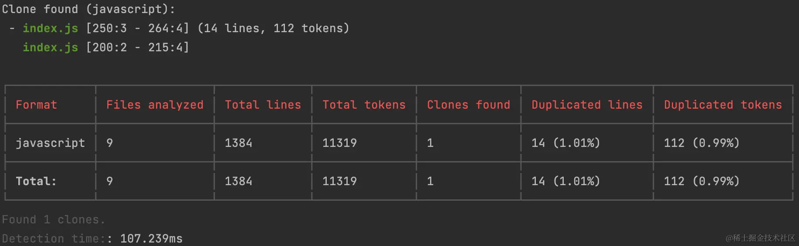
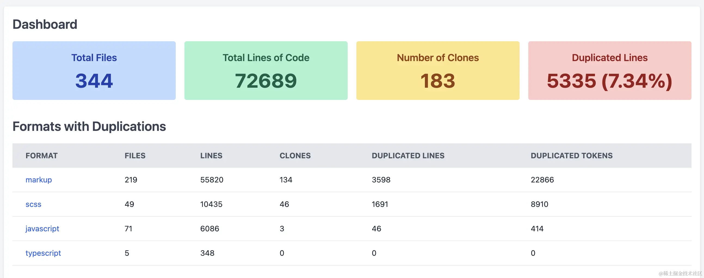
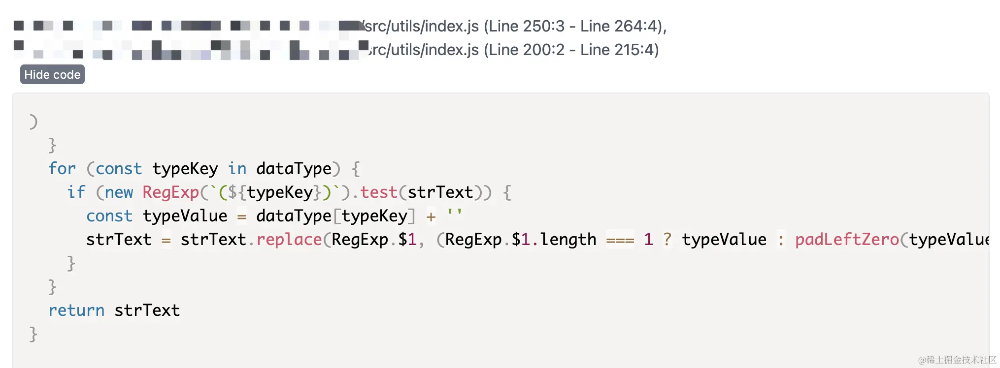

前端代码重复度检测
在前端开发中，代码的重复度是一个常见的问题。重复的代码不仅增加了代码的维护成本，还可能导致程序的低效运行。为了解决这个问题，有许多工具和技术被用来检测和消除代码重复。其中一个被广泛使用的工具就是jscpd。
jscpd 简介
jscpd是一款开源的JavaScript的工具库，用于检测代码重复的情况，针对复制粘贴的代码检测很有效果。它可以通过扫描源代码文件，分析其中的代码片段，并比较它们之间的相似性来检测代码的重复度。jscpd支持各种前端框架和语言，包括 HTML、CSS 和 JavaScript 等 150 种的源码文件格式。无论是原生的 JavaScript、CSS、HTML 代码，还是使用typescript、scss、vue、react等代码，都能很好的检测出项目中的重复代码。
开源仓库地址：github.com/kucherenko/jscpd/tree/master
如何使用
使用jscpd进行代码重复度检测非常简单。我们需要安装jscpd。可以通过npm或yarn来安装jscpd。
npm install -g jscpd
yarn global add jscpd
安装完成后，我们可以在终端运行 jscpd 命令，指定要检测的代码目录或文件。例如，我们可以输入以下命令来检测当前目录下的所有 JavaScript 文件：
jscpd .
指定目录检测：
jscpd /path/to/code
在命令行执行成功后的效果如下图所示：
简要说明一下对应图中的字段内容：
- Clone found (javascript)： 显示找到的重复代码块，这里是 javascript 文件。并且会显示重复代码在文件中具体的行数，便于查找。
- Format：文件格式，这里是 javascript，还可以是 scss、markup 等。
- Files analyzed：已分析的文件数量，统计被检测中的文件数量。
- Total lines：所有文件的总行数。
- Total tokens：所有的 token 数量，一行代码一般包含几个到几十个不等的 token 数量。
- Clones found：找到的重复块数量。
- Duplicated lines：重复的代码行数和占比。
- Duplicated tokens：重复的 token 数量和占比。
- Detection time：检测耗时。
工程配置
以上示例是比较简单直接检测单个文件或文件夹。当下主流的前端项目大多都是基于脚手架生成或包含相关前端工程化的文件，由于很多文件是辅助工具如依赖包、构建脚本、文档、配置文件等，这类文件都不需要检测，需要排除。这种情况下的工程一般使用配置文件的方式，通过选项配置规范 jscpd 的使用。
jscpd 的配置选项可以通过以下两种方式创建，增加的内容都一致无需区分对应的前端框架。
在项目根目录下创建配置文件 .jscpd.json，然后在该文件中增加具体的配置选项：
{
"threshold": 0,
"reporters": ["html", "console", "badge"],
"ignore": ["**/__snapshots__/**"],
"absolute": true
}
也可直接在 package.json 文件中添加jscpd：
{
// ...
"jscpd": {
"threshold": 0.1,
"reporters": ["html", "console", "badge"],
"ignore": ["**/__snapshots__/**"],
"absolute": true,
"gitignore": true
}
// ...
}
简要介绍一下上述配置字段含义：
- threshold：表示重复度的阈值，超过这个值，就会输出错误报警。如阈值设为 10，当重复度为 18.1%时，会提示以下错误 ❌，但代码的检测会正常完成。
ERROR: jscpd found too many duplicates (18.1%) over threshold (10%)
- reporters：表示生成结果检测报告的方式，一般有以下几种：
- console：控制台打印输出
- consoleFull：控制台完整打印重复代码块
- json：输出
json格式的报告 - xml：输出
xml格式的报告 - csv：输出
csv格式的报告 - markdown：输出带有
markdown格式的报告 - html：生成
html报告到html文件夹 - verbose：输出大量调试信息到控制台
- ignore：检测忽略的文件或文件目录，过滤一些非业务代码，如依赖包、文档或静态文件等
- format：需要进行重复度检测的源代码格式，目前支持 150 多种，我们常用的如 javascript、typescript、css 等
- absolute：在检测报告中使用绝对路径
除此之外还有很多其他的配置，有兴趣的可以看源码文档中有详细的介绍。
检测报告
完成以上jscpd配置后执行以下命令即可输出对应的重复检测报告。运行完毕后，jscpd会生成一个报告，展示每个重复代码片段的信息。报告中包含了重复代码的位置、相似性百分比和代码行数等详细信息。通过这些信息，我们可以有针对性的进行代码重构。
jscpd ./src -o 'report'
项目中的业务代码通常会选择放在 ./src 目录下，所以可以直接检测该目录下的文件，如果是放在其他目录下根据实际情况调整即可。 通过命令行参数-o 'report'输出检测报告到项目根目录下的 report 文件夹中，这里的report也可以自定义其他目录名称，输出的目录结构如下所示：
生成的报告页面如下所示：
项目概览数据：
具体重复代码的位置和行数：
默认检测重复代码的行数（5 行）和 tokens（50）比较小，所以产生的重复代码块可能比较多，在实际使用中可以针对检测范围进行设置，如下设置参数供参考：
- 最小 tokens：
--min-tokens，简写-k - 最小行数：
--min-lines，简写-l - 最大行数：
--max-lines，简写-x
jscpd ./src --min-tokens 200 --min-lines 20 -o 'report'
为了更便捷的使用此命令，可将这段命令集成到 package.json 中的 scripts 中，后续只需执行 npm run jscpd 即可执行检测。如下所示：
"scripts": {
// ...
"jscpd": "jscpd ./src --min-tokens 200 --min-lines 20 -o 'report'",
// ...
}
忽略代码块
上面所提到的ignore可以忽略某个文件或文件夹，还有一种忽略方式是忽略文件中的某一块代码。由于一些重复代码在实际情况中是必要的，可以使用代码注释标识的方式忽略检测，在代码的首尾位置添加注释，jscpd:ignore-start 和 jscpd:ignore-end 包裹代码即可。
在 js 代码中使用方式：
/* jscpd:ignore-start */
import lodash from "lodash";
import React from "react";
import { User } from "./models";
import { UserService } from "./services";
/* jscpd:ignore-end */
在 CSS 和各种预处理中与 js 中的用法一致：
/* jscpd:ignore-start */
.style {
padding: 40px 0;
font-size: 26px;
font-weight: 400;
color: #464646;
line-height: 26px;
}
/* jscpd:ignore-end */
在 html 代码中使用方式：
<!--
// jscpd:ignore-start
-->
<meta data-react-helmet="true" name="theme-color" content="#cb3837" />
<link
data-react-helmet="true"
rel="stylesheet"
href="https://static.npmjs.com/103af5b8a2b3c971cba419755f3a67bc.css"
/>
<link
data-react-helmet="true"
rel="apple-touch-icon"
sizes="120x120"
href="https://static.npmjs.com/58a19602036db1daee0d7863c94673a4.png"
/>
<link
data-react-helmet="true"
rel="icon"
type="image/png"
href="https://static.npmjs.com/b0f1a8318363185cc2ea6a40ac23eeb2.png"
sizes="32x32"
/>
<!--
// jscpd:ignore-end
-->
总结
jscpd是一款强大的前端本地代码重复度检测工具。它可以帮助开发者快速发现代码重复问题，简单的配置即可输出直观的代码重复数据，通过解决重复的代码提高代码的质量和可维护性。
使用jscpd我们可以有效地优化前端开发过程，提高代码的效率和性能。希望本文能够对你了解基于jscpd的前端本地代码重复度检测有所帮助。